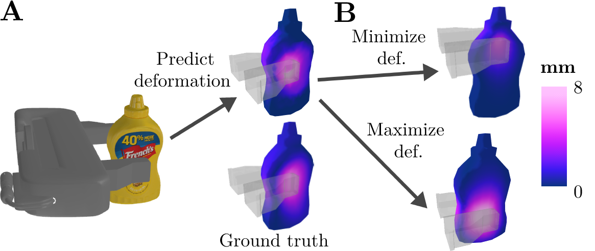
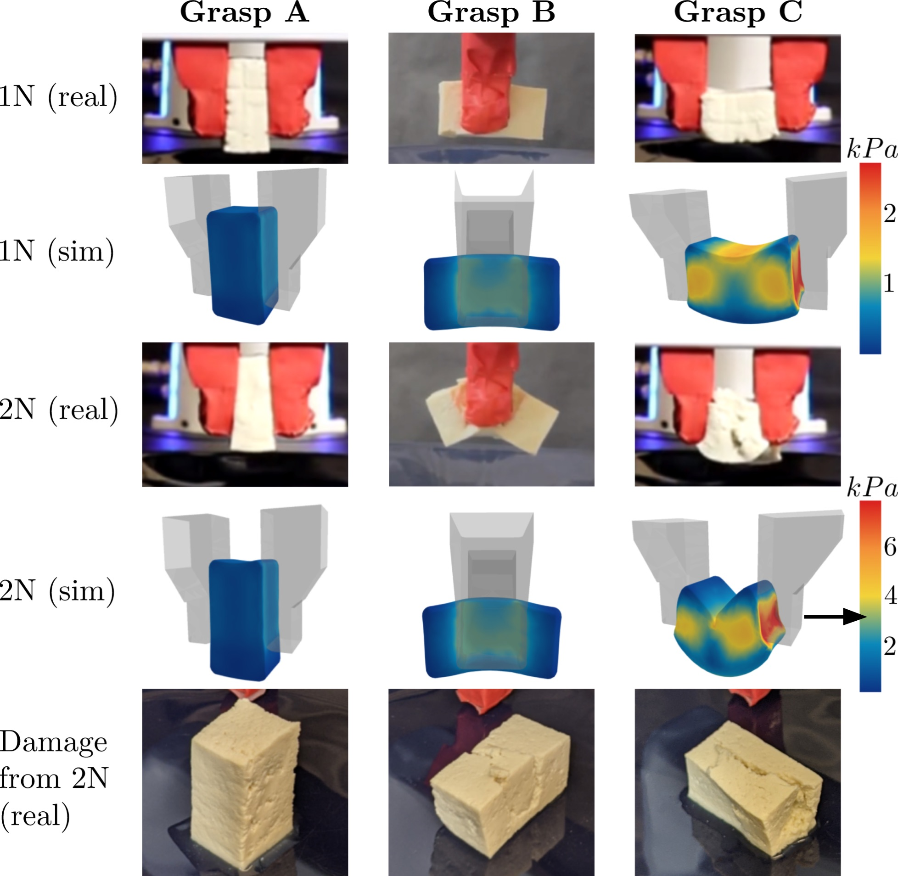

Isabella Huang
I am a senior research scientist at Toyota Research Institute, working on robot learning for mobile manipulation. I'm deeply interested in pre-training strategies that build better physical understanding in robots, as well as rigorous real-world deployment.
I received my PhD in EECS from UC Berkeley, where I worked in the Human-Assistive Robotic Technologies Lab and was fortunate to be advised by Ruzena Bajcsy. Before that, I completed my undergraduate degree in Engineering Science (Physics) at the University of Toronto.
Recent Publications



DefGraspSim: Physics-based Simulation of Grasp Outcomes for 3D Deformable Objects
IEEE Robotics and Automation Letters 2022